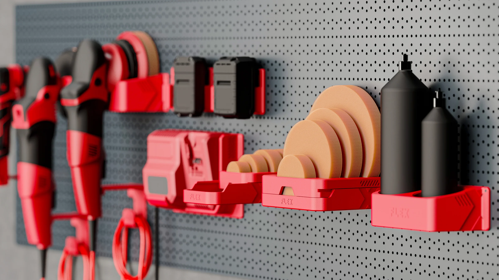
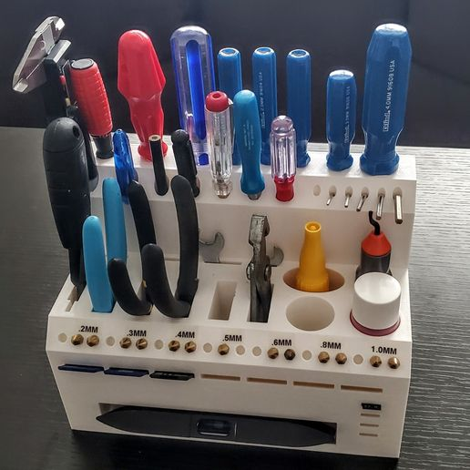
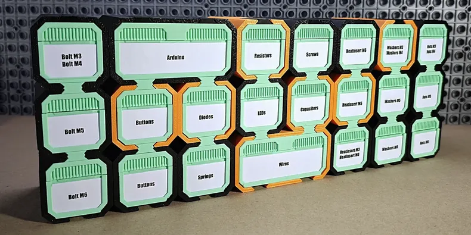

3D printing has practical applications in various industries, including healthcare, aerospace, automotive, and consumer goods. In healthcare, 3D printing is used to create prosthetics, dental implants, and even human organs. In aerospace and automotive industries, it enables rapid prototyping and the production of lightweight components that are difficult to manufacture using traditional methods. 3d printing allows home users the ability to create custom tools, replacement parts, and personalized items, making it a versatile technology for both professional and personal use.


